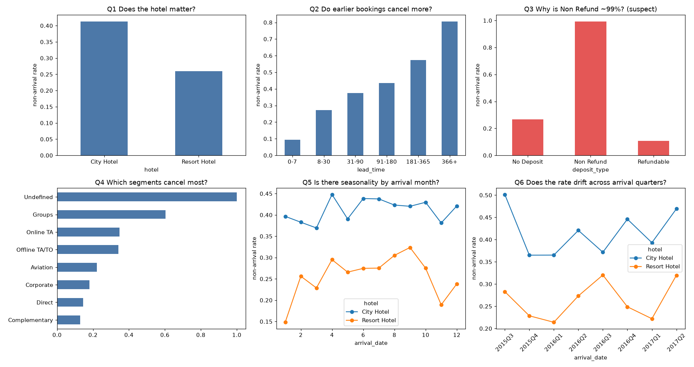
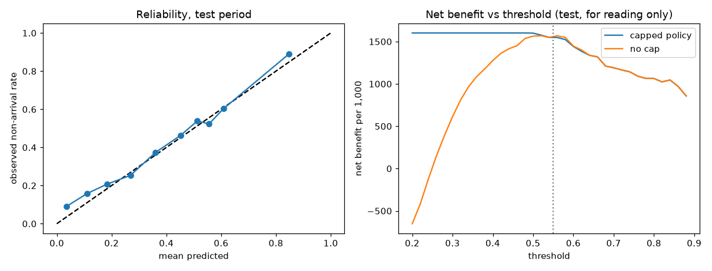

Which hotel bookings will not arrive?
A CRISP-DM project on the Hotel booking demand dataset (119,390 bookings, two Portuguese hotels, 2015 to 2017). Use the arrow keys or scroll.
37% of bookings never become a stay. What should a hotel do about it, and would it pay?
1. Define success before modeling
- One action: phone the guest, offer a free date change.
- Assumed costs: €20 per outreach, 25% save rate, €150 lost per unrecovered non-arrival.
- Break-even probability: 20 / (0.25 × 150) = 0.53.
- Ten pass/fail criteria (B1 to B4, D1 to D6) written down first.
2. Data understanding

- Lead time: 9.5% (under a week) to 81% (over a year).
- Groups 60% vs Direct 15%.
- 28% of rows are duplicates; Non Refund is 99% non-arrival (an anomaly).
3. The leak
Parking space required: 10.1% of arrivals, 0.0% of non-arrivals. The data is a day-before-arrival snapshot.
| Feature set | PR-AUC (rolling folds) |
|---|
| A: known at booking (used) | 0.719 |
| A + deposit type | 0.748 |
| A + B (post-booking fields) | 0.845 |
A model built on the last row would look brilliant and be useless when it is needed.
4. Validation you can trust
- Split by arrival date; the final 20% (from 22 April 2017) fixed by date before analysis and opened once for predictions. Disclosure: aggregate test outcomes were glimpsed during early exploration; no modeling choice used them, but the test is not perfectly clean.
- One scikit-learn pipeline, fit on training rows only.
- Leakage tests that must pass before modeling.
5. Modeling
| Model | PR-AUC | Net benefit per 1,000 |
|---|
| Majority | 0.362 | 0 |
| Decision tree | 0.639 | 1,208 |
| Logistic regression | 0.710 | 1,364 |
| LightGBM (tuned) | 0.719 | 1,576 |
D1 (boosted model clearly beats linear) failed. The pre-set rule chose logistic regression.
6. Test results (opened once)
1,533 vs −160
Net benefit per 1,000 bookings, model vs lead-time rule.
| Precision | Recall | Criteria |
|---|
| Logistic regression | 0.72 | 0.39 | D2, D3, D4, D5, B4 pass; B1, B3, D1, D6 fail |
7. What breaks

- Profit rests on unmeasured numbers: loses money below a 19% save rate.
- Summer collapse: precision 0.90 in April, about 0.52 in July and August.
- Fairness: German guests contacted wrongly 3.1× as often as Portuguese.
8. Decision
- No-go for an automated policy.
- Conditional go for a randomized pilot: about 710 flagged non-Group bookings per arm, through July and August.
- LightGBM (+489 per 1,000 on the test) runs as a shadow challenger, not crowned.
9. Deployment and monitoring
- Streamlit app: single booking and CSV; pilot mode excludes Groups and assigns a 50/50 arm.
- Tested headless and against the notebook: identical probabilities on 24,018 test bookings.
- Monitoring: PSI drift, flagged precision (catches the summer drop that aggregate calibration missed), country false-positive rates.
10. Lessons
- Ask when each field was recorded.
- Write the success criteria and seal the test first; disclose every peek.
- Two AI roles (draft, review) with fresh-context critics caught leakage, protocol and arithmetic errors: scores 4 → 9+.
- Next time: choose models by average fold net benefit and validate by season.